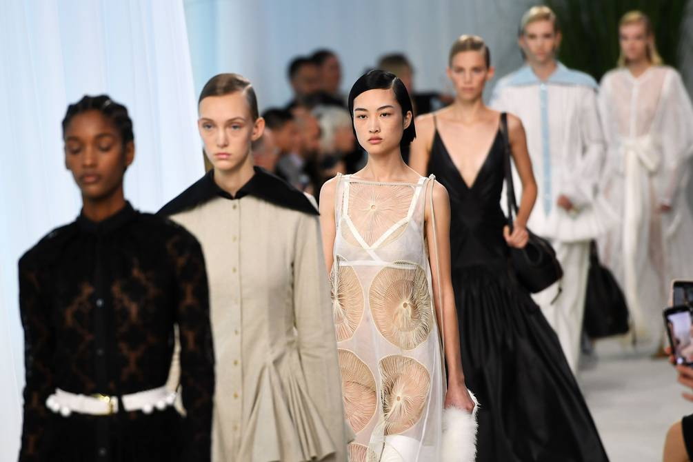

Desfile de Moda Benéfico Recauda Millones para la Lucha Contra el Cambio Climático
Londres, 10 de junio de 2024. El desfile de moda benéfico "Fashion for the Future" celebrado en Londres ha sido un rotundo éxito, recaudando millones de dólares para la lucha contra el cambio climático. El evento, organizado por la reconocida diseñadora Stella McCartney, reunió a algunas de las figuras más influyentes del mundo de la moda, el entretenimiento y la filantropía.
El Evento
El desfile, que tuvo lugar en la histórica Royal Albert Hall, presentó colecciones de varios diseñadores que comparten el compromiso de McCartney con la moda sostenible. Entre los destacados se encontraban diseños realizados con materiales reciclados y tecnologías innovadoras que reducen el impacto ambiental.
El evento contó con la presencia de celebridades como Emma Watson, Leonardo DiCaprio y Billie Eilish, quienes desfilaron en la pasarela y participaron en la subasta benéfica. Las piezas más codiciadas incluyeron un vestido de gala hecho completamente de plástico oceánico reciclado y una chaqueta hecha de cuero vegetal.
Impacto y Reacciones
La recaudación del evento superó todas las expectativas, con más de 10 millones de dólares destinados a proyectos de reforestación, limpieza de océanos y desarrollo de energías renovables. "Este es un paso crucial hacia un futuro más sostenible," declaró Stella McCartney. "La moda tiene el poder de liderar el cambio y hoy hemos demostrado que podemos hacerlo con estilo y propósito."

Los asistentes y críticos elogiaron el evento por su enfoque en la sostenibilidad y su capacidad para reunir a diferentes sectores en una causa común. "Fashion for the Future" ha sido visto como un modelo a seguir para futuros eventos benéficos en la industria.